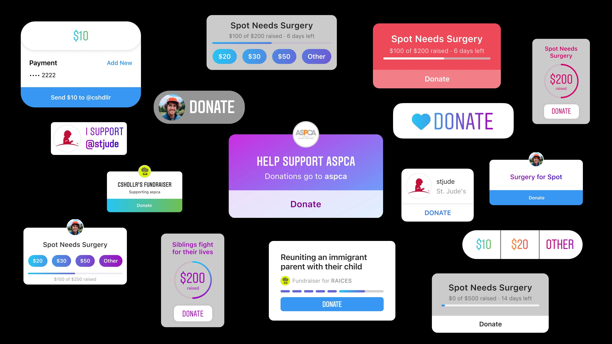
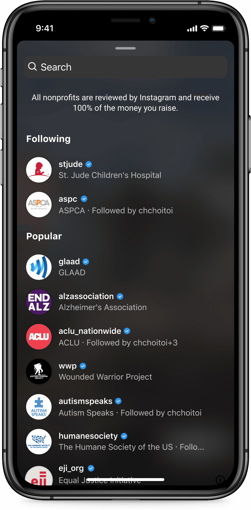
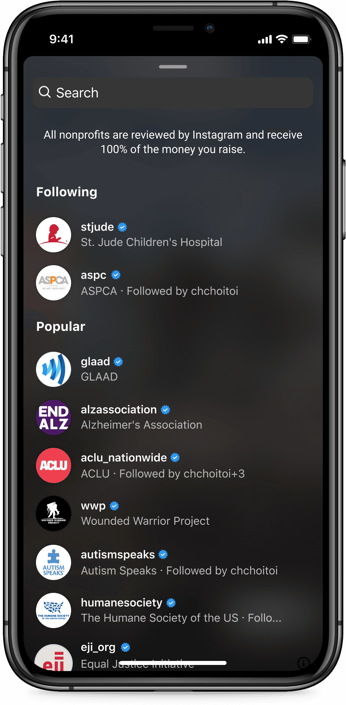

Instagram fundraisers
Problem
In 2018 activism was becoming more common on Instagram. People were sharing news stories, volunteer opportunities, and information about nonprofits. The problem we wanted to solve was the friction between seeing an inspiring post and having a clear next step to support that cause.
Initial explorations
As part of this work, we had to convince Instagram leadership that this made sense in the app. I started with design explorations of what this could look like on Instagram. I started with Instagram Stories because that was the most flexible place in the app for supporting new interaction types.
Early sticker explorations
Early design feedback
My early explorations included a wide range of information about a fundraiser. We had a lot of discussions about what the building blocks of a fundraiser are (Does it need a title? A goal? It definitely needs a beneficiary. What else?). I got feedback on these early designs from Christine Choi, a designer at Instagram who specialized in Stories, and from a UX research study. Based on that feedback, I continued to iterate on a simpler sticker.
Launch designs
After iterating and getting feedback from multiple teams, we landed on a design that felt expected within the context of Instagram Stories and made it clear what people were being asked to do. Our launch occurred in 2019 during the f8 conference.
Creating
Donating
 


Creation flow screens
Initial results
We saw early excitement from people who were using the sticker to spread awareness about their causes. However, people weren't raising as much money as they expected to, which made them feel like they were falling short of their goal.
Where the design fell short
Building a sticker for Instagram Stories was the correct first step, but we made some assumptions that weakened the initial product.
- Donors appreciate following up with fundraisers they donate to to see what progress has been made. Due to the ephemeral nature of Stories, this was harder to do, which made donating less rewarding.
- Most people browse Stories quickly and are looking for a fast way to see what their friends are doing. Donating is a heavier action that didn't fit neatly into the way people were using the product.
- The payment flow is an extremely delicate flow. It should feel trustworthy and predictable. With payments on Instagram, we had to take people to a mobile browser (i.e., outside of the app). This was due to complex business decisions and was a big point of friction.
A more permanent home
After having moderate success, a new team was formed with the edict of making fundraising more successful on Instagram. We came up with a new approach that focused on:
- A permanent page for the fundraiser that existed outside of Stories
- An entrypoint on the person's profile
- Easy distribution in places like messages, posts, and Story reshares
The fundraiser page
Results
These design updates led to much more successful fundraisers. It allowed some fundraisers related to current events to go viral and raise millions of dollars, which showed how powerful community can be when you build tools for them where they are.
Reflection
We set out to reduce the friction between learning about a cause and supporting it. Today we see people raise money and awareness for everything from local animal shelters to relief for an international disaster. I'm proud of this work and humbled to see what people have done with it.

Mark Zuckerberg on stage at f8 in 2019 announcing the launch of the donation sticker